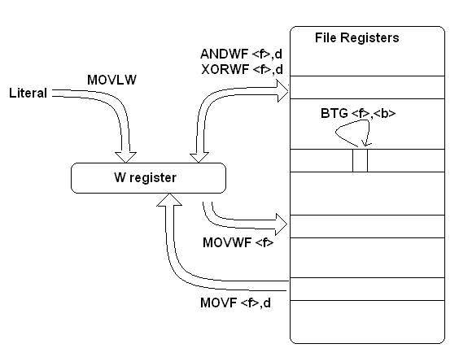
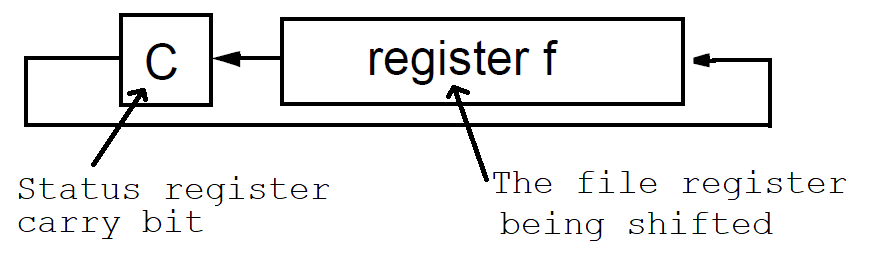

| Lecture: | 31 |
| Objective | Understand the internal organization of the PIC tha tfetches and executes instructions. |
| Code: |
pic01.asm pic02.asm |
| Objective: | Assembly data types, declarations, arithmetic, and logic operations. |
General CPU Model

Programmers Model & Assembly Instructions
This PIC is an accumulator based machine, meaning all data-computations manipulate a special register called the accumulator, or in the PICs case the "working" or W register. Clearly, complex calculations will require more than a single place to put data, hence the PIC has a data RAM, called the "File Registers" or F register in the PICs case. Will will start our exploration of the PICs assembly language by examining the "BYTE-ORIENTED FILE REGISTER OPERATIONS" on page 376 of the datasheet. For the most part these instructions will manipulate the contents of the W register or one of the F "registers". PIC assembly mnemonics are always read from left to right, like an English sentence. The letter "f" in the assembly language instructions is a supposed to be a number between 0x00 and 0x7F which is the address of the file register being manipulated. The letter "d" determines the destination of the operation. If d=0 then the result of the operation is put into the W register. If d=1 then the result of the operation is put into the f register. Normally, an include file is associated with your programs which equates d=0 with the letter "w" and equates d=1 with the letter "f" so that you do not have to remember this arbitrary numerical assignment.
Operations on datatypes
When programming in assembly, you quickly come to terms with the notion that everything that you want to describe must be done in bits. In this respect you can create any datatypes you want in assembly. However, the operations on datatypes are a different matter entirely. The only datatypes understood by the PIC microcontroller's, instructions, called native datatypes, are boolean, unsigned 8-bit, and signed 8-bit values. Operations on other, non-native, datatypes like ASCII, 32-bit integers, and floating points must be described by software routines written using the native dataypes.When writing an assembly program, you will need to be able to reference the places in memory where you have stored variables. The PIC assembly language provides two means to achieve this goal:
- EQU - explicitly declaring the address to store the variable
- RES - allowing the assembler to determine the address to store the variable.
explicitVar EQU 0x20 autoVar RES 2The first line states that you will be storing the variable "explicitVar" at RAM address hexadecimal 0x10. The second line tells the assembler to carve out 2 bytes of data memory at a location of its choosing. Any reference to "autoVar" in the program will be replaced with the address the assembler has choosen.
The first method is fine for simple programs where you do not have many variables to keep track of. In fact the "EQU" statement can be used anytime that you want to have a string name for a constant. Say you are building a music box to play a song with 45 notes. You might have the statement SONG_LEN EQU 45 in your program. The second method of reserving space in data memory is prefered for several reasons:
- If a variable is remvoed from your program, the existing ones are moved around in data memory to accomidate,
- If new variables are added to your program, the existing ones are moved around in data memory to accomodiate,
- there is no risk of your overlapping two variables.
Assembly arithmetic operations
The most familiar type of operations are those that you learned early in elementary school, arithmetic operations. Let's look at a C-code example consisting of variable declarations and expressions and re-interpret them into PIC assembly language. These examples are very similar to arithmetic expression formed in Lecture 02. You should notice that,- comments start with a semicolon
- mnemonics do not start in the first column
- operands are all vertically aligned
;****************************************************
; C arithmetic operations - Lecture 02
;****************************************************
MOVLW 25
MOVWF X8 ; M[X8] <- 25
MOVLW 15
MOVWF Y8 ; M[X8] <- 25
MOVLW 10
MOVWF Z8 ; M[X8] <- 25
; z = x + y; yields z = 40
MOVF Y8, W ; W <- M[Y8]
ADDWF X8, W ; W <- M[X8] + W
MOVWF Z8 ; M[Z8] <- W
; z = x - y; yields z = 10
MOVF Y8, W ; W <- M[Y8]
SUBWF X8, W ; W <- M[X8] - W
MOVWF Z8 ; M[Z8] <- W
; z += x; yields z = 35
MOVF X8, W ; W <- M[X8]
ADDWF Z8, F ; M[Z8] <- M[Z8] + W
; z = x++; yields z = 25, x = 26
MOVF X8, W
MOVWF Z8
INCF X8
; z = y - x; overflow z = 245 (15 - 26 = -11 rolls to 256 - 11 = 245)
MOVF X8, W
SUBWF Y8, W
MOVWF Z8
Operation between Literal and File Register
Whenever are performing an operation between a literal and a variable in memory and storing the result back in a different memory location, we will always use a three step illustrated in the following figure.- Step 1: Move the literal into the W register
- Step 2: Perform the operation and store the result into W
- Step 3: Move W into the destination register.

Operation between File Register and File Register
Whenever are performing an operation between two variables store in the file registers and storing the result back in a different memory location, we will always use a three step illustrated in the following figure.- Step 1: Move the variable into the W register
- Step 2: Perform the operation and store the result into W
- Step 3: Move W into the destination register.

Note that when one of the source variables is the same as the destination variable this 3 step process can be reduced to 2 steps. For example, you can perform the operation x = x + y; in 2 instructions as follows:; x = x + y; MOVF Y8, W ; W <- M[Y8] ADDWF X8, F ; M[X8] <- M[X8] + W
Here the "F" in the "ADDWF" instruction instructs the PIC to store the result of the add back into the named file register - in this case X8. The use of "F" can sometimes simplify your assembly programs.Assembly bitwise logical operations
Bitwise logical operations perform the familiar AND, OR, XOR and NOT operations on variable, by performing the logical operations on pairs of bits in the same bit-position in each operand. We often use bitwise logical operations to mask portions of a variable, hiding certain bit-positions of the variable from the effects of an operation.;**************************************************** ; C logic operations - Lecture 02 ;**************************************************** MOVLW B'10101100' MOVWF X8 MOVLW B'00110101' MOVWF Y8 CLRF Z8 ; z = x & 0x0F; z = 0b0000 1100 MOVLW 0x0F ; W <- 0x0F ANDWF X8, W ; W <- W & M[X8] MOVWF Z8 ; M[Z8] <- W ; z = x | y; z = 0b101 1110 MOVF Y8,W ; W <- M[Y8] IORWF X8, W ; W <- W | M[X8] MOVWF Z8 ; M[Z8] <- W ; z = x ^ 0x0F; z = 0b1010 0011 MOVLW 0x0F ; W <- 0x0F XORWF X8, W ; W <- W ^ M[X8] MOVWF Z8 ; M[Z8] <- W ; z = ~x; z = 0b0101 0011 COMF X8, W ; W <- ~M[X8] MOVWF Z8 ; M[Z8] <- W ; z = x<<1; z = 0b0101 1000 BCF STATUS, C ; clear carry bit RLCF X8, W ; rotate X8 left with carry bit into LSB into W MOVWF Z8 ; M[Z8] <- W ; z = x>>3; z = 0b0001 0101 MOVF X8, W MOVWF Z8 ; M[Z8] <- M[X8] BCF STATUS, C ; clear carry RRCF Z8 ; rotate right with 0 into MSB (logical SR) BCF STATUS, C ; again RRCF Z8 BCF STATUS, C ; again RRCF Z8
With the exception of shift operations, these operations follow the same pattern used for arithmetic operations. The PIC is a little unusual in microcontrollers because it exclusively uses a circular shift operation. We are using the variation that puts the carry bit into the loop as shown in the following figure.

Probably 90% of the time that someone wants a shift operation, they are asking to perform a logical shift. This means that they want a "0" placed in the vacated bit position. However in a normal circular shift the bit that is shifted off the end off the register is placed in vacancy created at the other end of the register. However using the "RLCF" instruction, the carry bit is put into this loop as shown in the figure above. Consequently, my code clears this "C" bit prior to the shift operation to ensure that a "0" is always placed in the vacancy created, creating a logical shift.BCF STATUS, C ; clear carry bit RLCF X8, W ; rotate X8 left with carry bit into LSB into W
Static evaluation
The PIC assembler will make every effort to compute any the value of an operation before it generates the final machine code. Operations which are performed prior to generating the downloaded code are called static evaluations. The word static means that the evaluation is performed on values that cannot change - they are static (lacking motion).
One example of static evaluation are mathematic expression related to addresses. For example, consider the following assembly instruction:MOVF varX8+1, w
The assembler running on the PC will find the address asscicated with "varX8" and the PC will add 1 to it and use the resulting value as the file register address for the MOVF instruction.Test your understanding
You can find the solutions embedded in the "source code" for this web page by right mouse clicking on this web page and selecting "view source". The solutions are in HTML comments.- Write a set of assembler directives that allocates storage for
the following C declarations using the "RES" directive.
uint8_t varX8, varY8, varZ8; uint16_t varX16, varY16, varZ16; char string[16]; - The file
C:\Program Files (x86)\Microchip\MPLABX\v4.01\mpasmx\p18f26k22.inc
has many useful definitions and some nice coding techniques.
- Look up the definition for the status register.
- Find the address of status regstier on page 78 of the PIC18(L)F2X/4XK22 Data Sheet posted on the class web page.
- Look up the definitions for the bits of the status register.
- Go through the assembly code contained in pic02.asm - I will ask you about this on the second exam.
- Perform the C operation varZ8 = 3*(varX8 + varY8); You should assume that space for these variables has already been reserved. You can do this without a temporary variable.
- Perform the C operation varZ8 = varX8++; You should assume that space for these variables has already been reserved.
- A linear feedback shift register (LFSR) is a general techanique that
has been used with great success in generating pseudo-random number.
A pseudo-random number generator starts with a seed valuye (any non-zero
number) and generates a sequence of numbers that look like they have
no relationship to one another. To generate a sequence of pseudo-random
16-bit numbers using an LFSR with current varX16. To do this:
- Step 1: xor the bits in positions 15,13,12,10 and 0 (start indexing your bits starting at position 0),
- Step 2: shift varX16 left one bit,
- Step 3: put the xor bit into the LSB of varX16.
- Write a set of assembler directives that allocates storage for
the following C declarations using the "RES" directive.